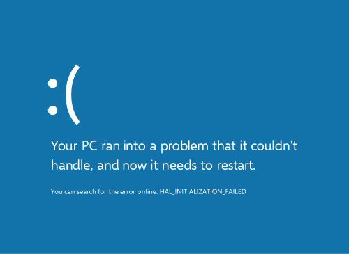

La NSI est un enseignement de spécialité qui peut être pris en première générale puis gardé en terminale
La NSI est une spécialité qui enseigne dans la domaine de l'informatique, d'ou son nom: "Numérique et sciences informatiques" Au programme il y a plusieurs choses intéréssantes, notamment:
Les cours se déroulent durant 2 heures 2 fois par semaines comme les autres spécialités Ils sont séparés en deux parties: théorie et pratique La théorie est passée a étudier comment fonctionnent certaines choses (programmation, structure machine, ...) La pratique se fait sur des postes informatiques, elle est soit passée seule sous forme d'activités sur la séquence, ou en groupe sous forme de projets
Les projets laissent souvent les élèves en autonomie avec l'aide (ou non) des enseignants pour accomplir une tache et subvenir a un cahier des charges. Ils sont réalisés en groupe et permettent aux élèves de développer un esprit d'équipe et de travail en groupe. Ils nécéssitent la rédaction de comptes-rendus, souvent au format pdf pour éviter les déformations, et les projets permettent d'apporter des bases solides sur la séquence